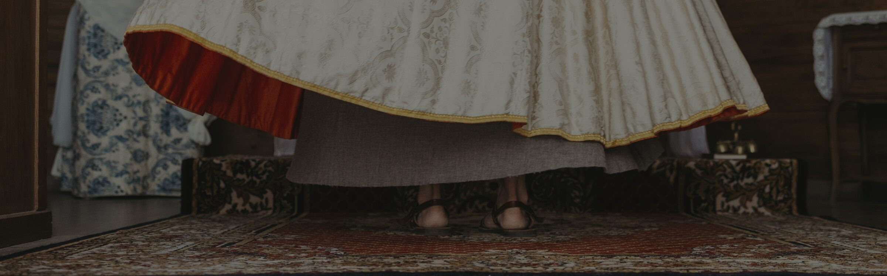
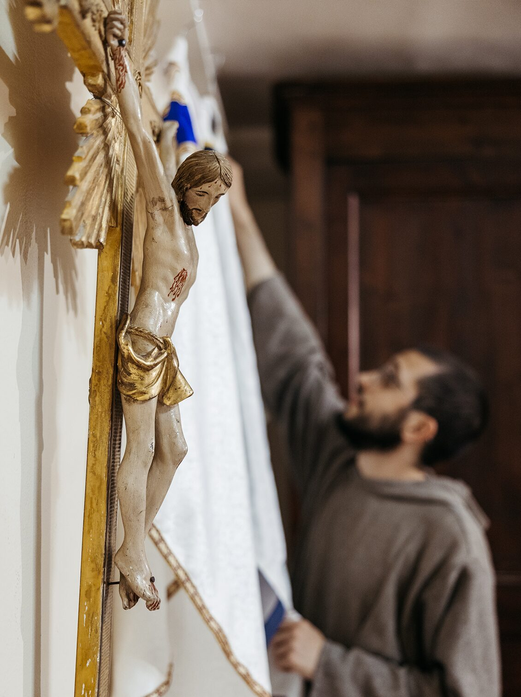
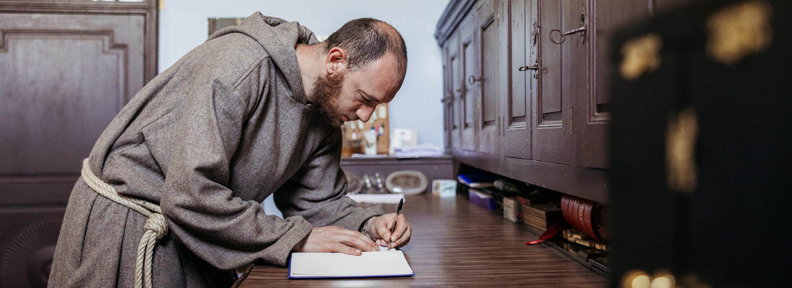
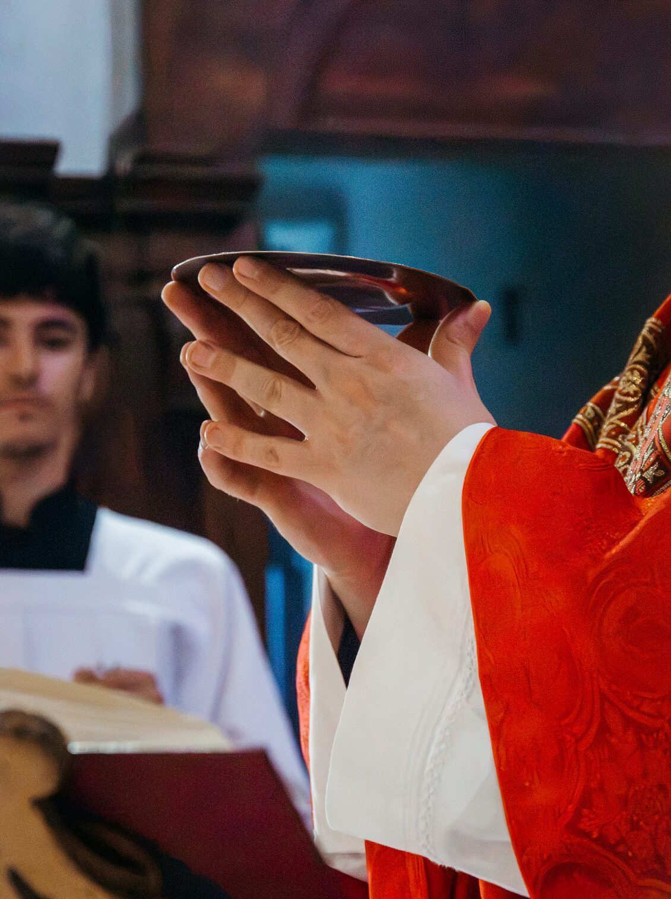
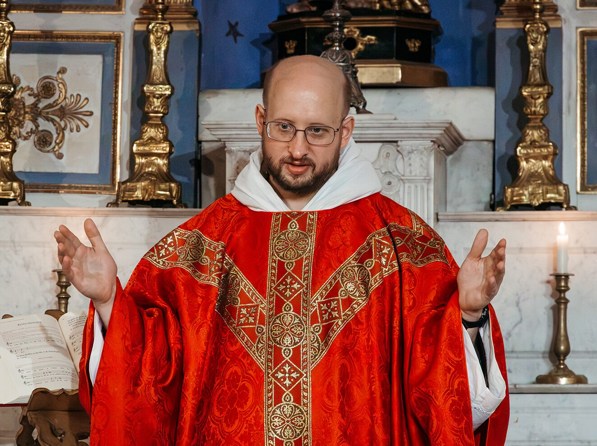

Orari e intenzioni
Dove e quando celebriamo
Le Sante Messe
I frati francescani della compassione celebrano la Santa Messa in cinque parrocchie della Var, dove i frati sono presenti e accompagnano le comunità di fedeli: Callas, Bargemon, Claviers, Plan-d'Aups-Sainte-Baume e Saint-Zacharie.

Gli orari indicati sono quelli abituali; per eventuali variazioni, verificare gli aggiornamenti settimanali sul sito: messe.info
Confessioni: i sacerdoti sono disponibili 30 minuti prima di ogni celebrazione, salvo imprevisti.
Bargemon, église saint Étienne
850 Rue de la Resistance 83830 Bargemon
Messa feriale merc-giov-ven: 18.00
Messa festiva: 11.00
Callas, église Notre-Dame de l'Assomption
2 Place de l'Église, 83830 Callas
Messa festiva: 9.30
Claviers, église saint Sylvestre
Place du 8 Mai 1945, 83830 Claviers
Messa prefestiva: 18.00
Plan-d'Aups-Sainte-Baume, Chapelle Roc-Estello
Dom. Roc-Estello 42, allée de Béthanie, 83640 Plan-d'Aups-Sainte-Baume
Messa feriale: 7.00
Plan-d'Aups-Sainte-Baume, église Saint-Jacques le Majeur
Chemin de l'adret, 83640 Plan-d'Aups-Sainte-Baume
Messa feriale merc: 11.00
Messa domenicale: 11.00
Saint Zacharie, église Saint Jean Baptiste
1 Place de l'Eglise, 83640 Saint-Zacharie
Messa feriale mart-giov-ven: 18.00
Messa feriale sab: 10.00
Messa prefestiva: 18.00
Messa domenicale: 9.00

Offrire una S. Messa
per un'intenzione particolare
Ogni Messa è celebrata per la Chiesa e per il mondo intero, ma il sacerdote può aggiungere un'intenzione speciale: per un defunto, un malato, una famiglia, un momento difficile.
Compila il modulo qui sotto, puoi chiederci di portare sull'altare ciò che hai nel cuore.
Dopo aver ricevuto la tua richiesta, ti contatteremo per confermarti la celebrazione e comunicarti il giorno in cui verrà celebrata per la tua intenzione.
Ti invieremo inoltre i dati per poter fare un'offerta libera, secondo le tue possibilità. Come riferimento, l'offerta indicata dalla Diocesi di Tolone è di 18 € per una Santa Messa.
L'offerta non deve essere un ostacolo: nessuno rinunci a chiedere una Santa Messa per motivi economici. Se ti trovi in difficoltà, scrivici liberamente per concordare l'intenzione.
Richiedi una o più Sante Messe
Perché offrire una Messa?

Il significato di un'offerta
Fin dai primi secoli della Chiesa, i fedeli hanno accompagnato la loro intenzione con un'offerta. Non è il pagamento di una celebrazione — una Messa non ha prezzo. È un gesto di partecipazione: un modo concreto per unirsi più profondamente alla celebrazione e contribuire alla vita della comunità e al sostentamento dei sacerdoti.
L'importo è stabilito dalla diocesi di riferimento.
Per la nostra diocesi di Tolone:
- Una Messa: 18 €
- Una novena (9 Messe): 180 €
- Una trentina gregoriana (30 Messe): 570 €
Pregare per i defunti
La Messa celebrata per una persona cara che ci ha lasciato è la preghiera più grande che possiamo offrire per lei. La Chiesa ha sempre onorato la memoria dei defunti proprio attraverso il sacrificio eucaristico, affinché raggiungano la pienezza della vita in Dio.
Tutte le opere buone messe insieme non equivalgono al sacrificio della Messa, perché sono opere di uomini, mentre la Santa Messa è opera di Dio: è il sacrificio che Dio fa agli uomini del suo Corpo e del suo Sangue.
— Santo Curato d'ArsLa novena e la trentena gregoriana
La novena è la celebrazione della Messa per nove giorni consecutivi. Si può chiedere per qualsiasi intenzione: un ringraziamento, un malato, una persona in difficoltà, un defunto.
La trentina gregoriana è invece la celebrazione di una Messa al giorno per trenta giorni consecutivi, e può essere offerta solo per una persona defunta. È un'usanza antichissima, che risale a Papa San Gregorio Magno. Nel 1752 Papa Benedetto XIV la definì "pia, approvata e ragionevole" — e ancora oggi è uno dei suffragi più profondi che la Chiesa conosce.
Per entrambe non è necessario che le Messe siano celebrate dallo stesso sacerdote.

Sostieni i frati e il loro apostolato.
Il tuo contributo permetterà alla comunità di vivere concretamente la compassione e la comunione del Vangelo.
SOSTIENICI